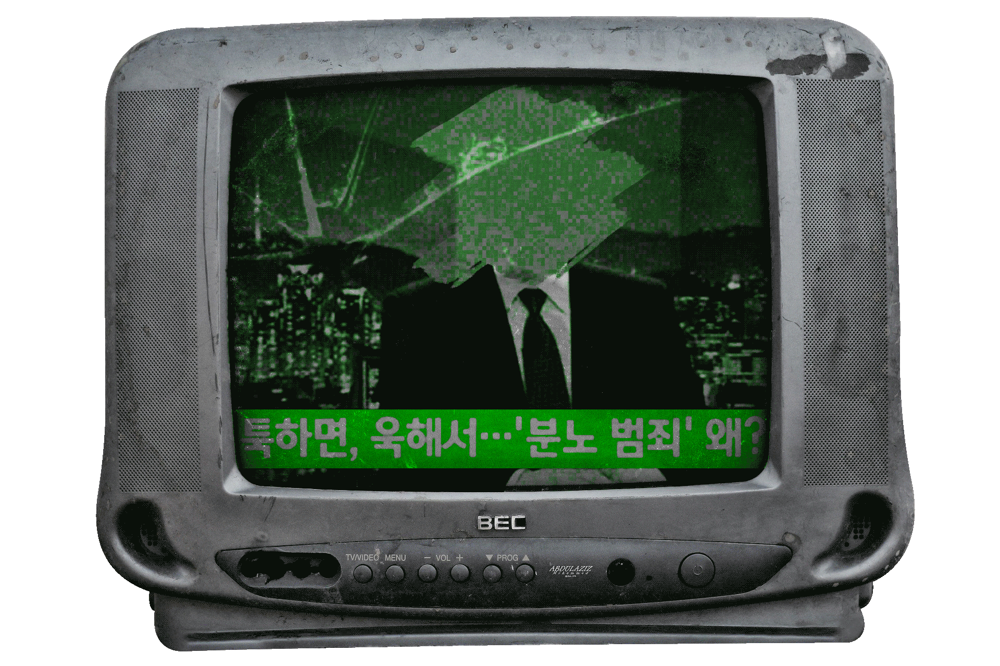
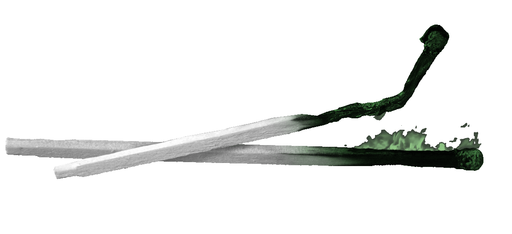
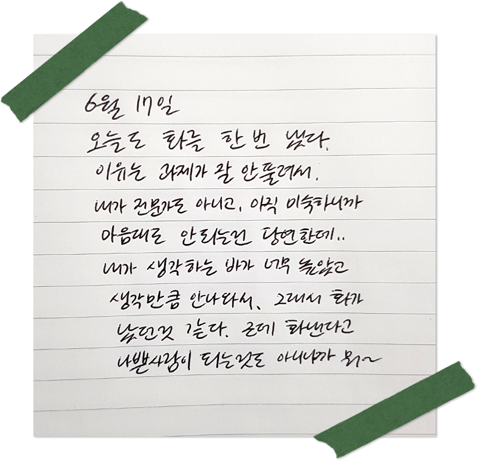

지금 우리는?

최근 사람들은 아주 빨갛다.
가만있어도 화가 머리끝까지 차오른 게 눈에 선히 보인다.
예전엔 화를 꾹꾹 눌러 담아서 화병의 민족이었는데,
웃기게도 요즘은 너도나도 짜증과 화를 여과 없이 표한다. 지나치게.
개인적으로 싸움과 분노 같은 감정 소모를 보기만 해도
기가 빨려서 난 이런 사회가 정말 싫다.
요즘 사람들은 왜,
화를 주체하지 못하고 쉽게 분출하는 걸까?
화도 병이지.
근데 화병 아니고 분노조절장애?

앞서 말했지만 대한민국의 과거는 화를 참아서 몸에 탈이 나는 화병의 나라였다.
하지만 이젠 분조장이 하나의 밈처럼 취급될 정도로 화가 만연해진 게 현실이다.
그렇다면 분조장, 많이 들어는 봤는데 이게 정확하게 뭐지?
충동(분노)조절장애, 올바른 의학 표기는 ‘간헐적 폭발 장애’로,
화를 참지 못하고 느닷없이 충동적/폭력적으로 표현하는 증상이다.
특히 간헐적으로 공격 충동이 억제되지 않기 때문에
심각하게 파괴적인 행동과 폭력을 저질러 법적으로 문제가 발생한다.
건강보험심사평가원에 따르면 ‘간헐적 폭발 장애’로 진단받은 환자는
2012년 1,479명에서 2016년 1,706명으로 늘었고,
전체 환자의 30.4%(2016년 기준 519명)가 20대 남성이었다.
분조장이라는 말이 많이 들려오게 된 만큼 실제로 그런 사람이 늘고 있었다.
하지만 최근 한 범죄심리학자가 방송에서 나와서 한 말을 보면
‘마동석 같은 사람을 보고도 달려드는 게 진짜 분노조절장애’라고 한다.
그게 아니면 그냥 약자에 대한 옹졸한 보복심과 저급한 폭력일 뿐이다.
그럼 뭐가 문제야?
진짜 분조장이 아니라면, 요즘 사람들이 화를 내게 되는 이유는 뭘까.
여러 이유가 있겠지만 그중 체감되는 몇 가지를 정리해봤다.
스트레스
개개인 성향이 화가 많게 변했다기보단, 가정, 학교, 사회 등 매일
어디 서던 마주치는 불평등하고 불공정한 사회환경이 크게 작용해서다.
억울하고 무시당하는 상황들을 마주하며 화가 쌓이는데, 마땅히 풀 곳도 없고
처리할 방법을 알지 못해 건강하게 분노를 조절할 수 없게 된다.
사람-사람
감정이란 건 사회화를 통해 다스려야 하는 부분이다.
하지만 한국의 경우 개인 간 소통 단절, 핵가족화가 되며
고민을 나눌 대상과 기회가 적어졌다. 게다가 요즘은 코로나로 인해
사람 만나기가 더 힘들어졌다. 은연중에 우리는 사회화할 기회를 많이 잃었다.
코로나 레드
‘코로나 레드’라는 말이 새로이 탄생했다.
코로나19로 생겨난 우울감을 뜻하는 '코로나 블루(Corona Blue)'를 넘어선 상태로,
장기화되는 감염병 상황에서 생겨난 우울이나 불안 등의 감정이 분노로 폭발하는 것을 뜻한다.
사상 초유의 사태로 스트레스가 지속해서 쌓이고, 경제적 위기에까지 이르게 되자,
외부에서 그 원인을 찾고 탓을 돌리고 분노한다.
잘못된 희열
‘사이다’라는 유행어가 있었다. 어떤 상황에서 통쾌한 대처를 보니 속이 시원하다는 뉘앙스의 말이다.
그런데 이가 변질해, 몇몇 사람들은 일종의 특권의식을 느끼며 불필요한 상황에서까지
상대에게(특히 자신보다 약자에게) 과하게 면박을 주고 화를 낸다. 그리고 희열을 느낀다.
불규칙한 생활패턴
대부분의 사람들이 낮에는 학교를 가거나 직장에 가는 등 실내에 머물게 되었다.
밤에는 미처 못한 일을 처리하며 밤을 새게 된다. 이렇듯 낮에는 충분한 햇볕을 쬐지 못하고,
밤에 과도한 조명에 노출되는 등 인간 본래의 생체리듬이 교란되면
수면장애나 불안감, 충동성이 생겨나기 쉽다.
화를 제대로 내는 법은?

화는 부정적인 감정이다. 그런데 제대로 내라는 게 무슨 말일까?
우리가 결국 다스려야 하는 감정이라면, 어떻게 내고 진정하는게 올바른 방법인지 아는 게 중요하다는 말이다.
다음은 가타다 다다미라는 정신과 전문의가 정리한 방법을 바탕으로 각색한 예시다.
평상시

(1)
분노를 자각하고, 화내지 않는 좋은 사람이 되려는 강박관념을 버린다
(2)
평소에 분노를 조금씩 드러내며, 하루에 한 번 화를 낸다
(3)
대개 분노의 근저에는 무력감이 숨어있으며, 생각대로 일이 풀리지 않을 때
이상과 현실의 격차를 절감하기 때문에 왜 분노를 느꼈는지 곰곰이 생각해 본다.
화났을 때

(1)
무엇 때문에 화가 났는지를 분노의 원인이 된 사항에 관해 5가지 요소
(행동, 해석, 감정, 영향, 희망)를 정리해서 말한다.
(2)
본인의 의도를 전했다면, 이번에는 상대가 무엇을 필요로 하는지 물어본다.
(3)
상호 의사를 전달한 후 절충점을 찾는다. 만약 상대가 완고하다면 현실을 명확히 판단하고 포기한다.
이외에도 화가 남을 느낄 때 다른 행위를 하며 자신의 주의를 돌리거나,
좋아하는 것을 하며 마음을 진정 시키거나, 5초간 숨을 들이쉬고
5초간 숨을 내쉬는 심호흡을 통해 진정할 수 있다.
화가 날 순간들이 많겠지만, 위 방법들을 통해 화를 다스려보자.